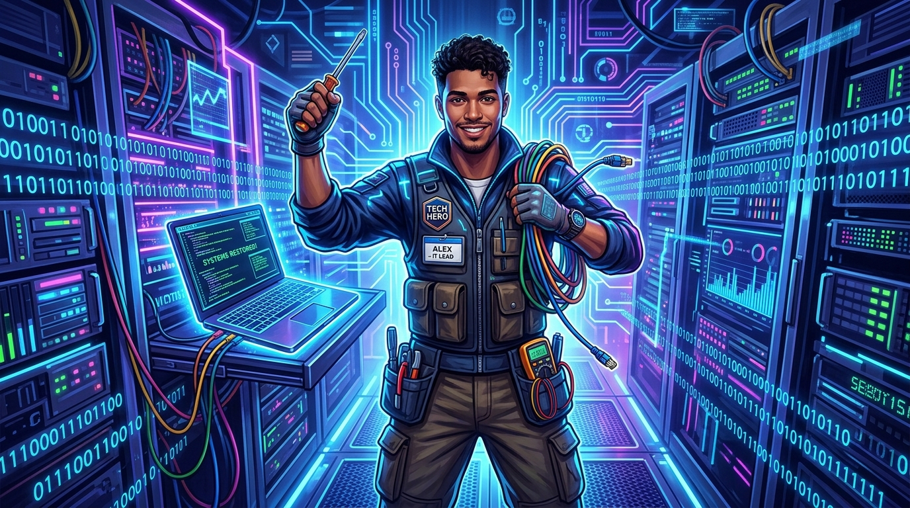
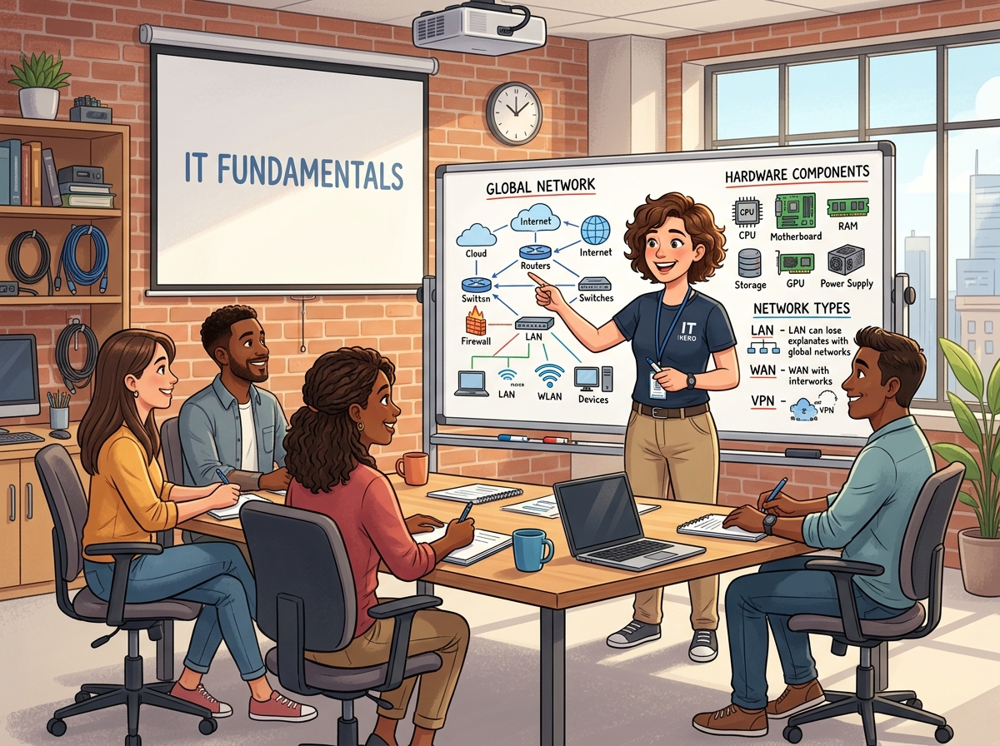
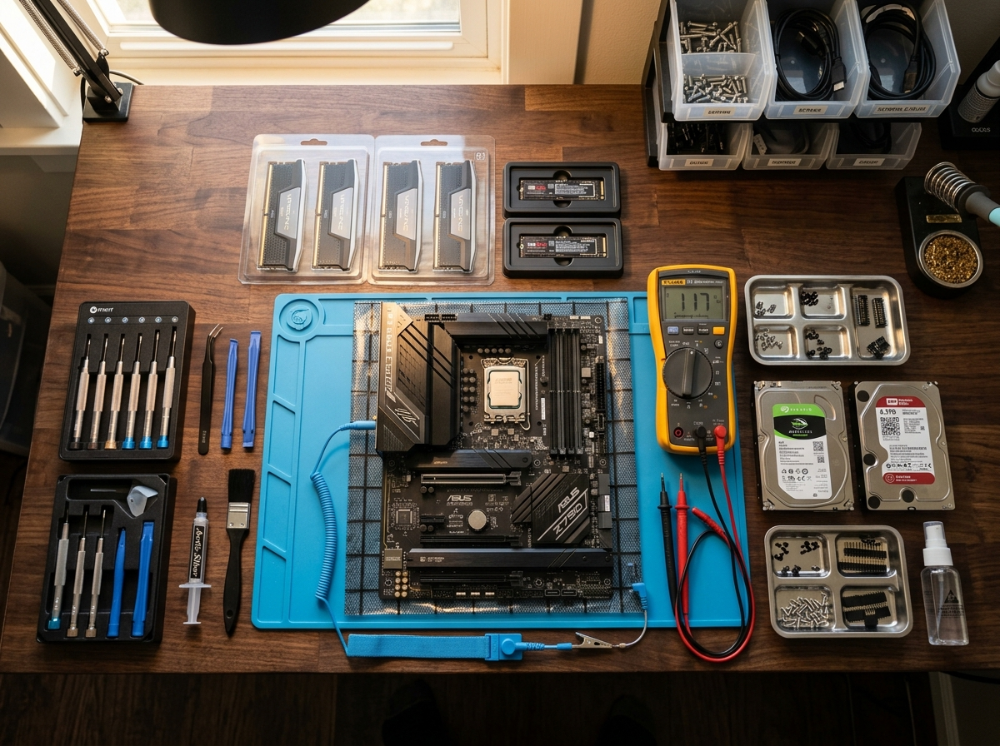
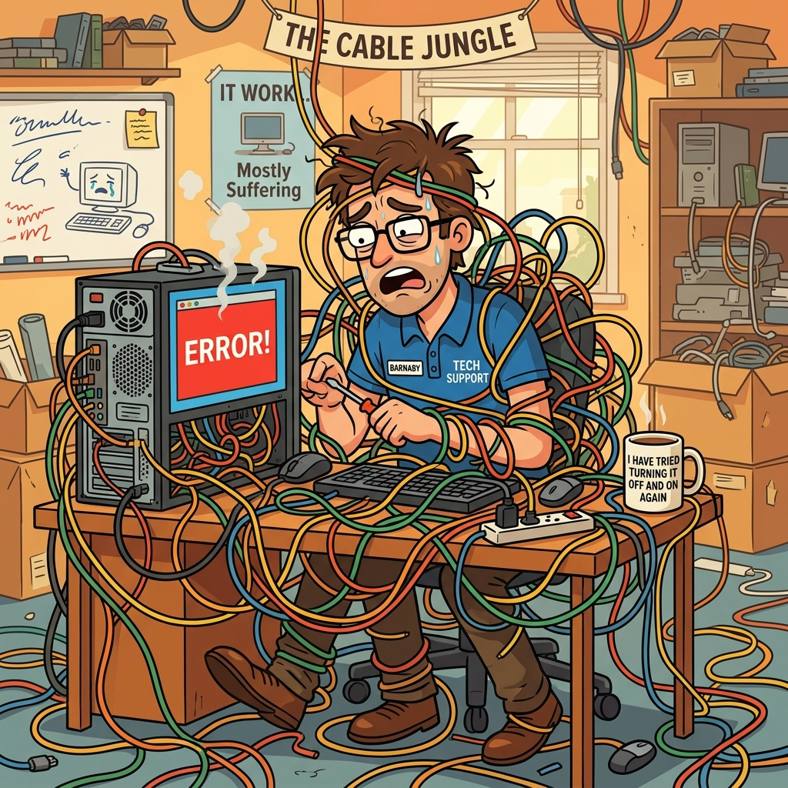

Eles reiniciam computadores, salvam HDs e traduzem "linguagem técnica" para meros mortais. Hoje é o dia de homenagear os verdadeiros heróis sem capa — mas com chave de fenda! 🔧
Uma data para celebrar os profissionais que mantêm o mundo digital funcionando.
O Dia do Técnico de Informática é celebrado em 19 de outubro no Brasil. A data homenageia os profissionais que trabalham na manutenção, reparo e configuração de computadores, redes e sistemas — aqueles que transformam o caos digital em ordem!
A profissão surgiu com a popularização dos computadores pessoais nos anos 80 e 90, e desde então se tornou essencial em todos os setores da sociedade. Sem eles, a internet seria só uma "inter-nada"! 😄
Seja em grandes data centers ou na casa da sua avó que "não consegue abrir o e-mail", o técnico de informática está lá — sempre pronto para reiniciar, formatar e salvar o dia!
Clique nos cards para revelar a punchline! Porque um técnico sem humor é como um PC sem memória RAM.
Por que o técnico de informática é o melhor namorado?
Porque ele sempre faz backup dos momentos especiais e nunca deixa o relacionamento travar! 💕
Qual é a primeira solução do técnico para qualquer problema?
"Já tentou desligar e ligar de novo?" — Funciona em 90% dos casos... e nos outros 10%, funciona na segunda tentativa! 🔄
Como o técnico de informática se apresenta na festa?
"Oi, eu sou full stack... cheio de problemas pra resolver, de cima a baixo!" 📚
Qual a diferença entre um técnico e uma máquina de café?
A máquina de café para de funcionar quando acaba o café. O técnico continua funcionando na base do Java! ☕💻
Por que o técnico não tem medo de aranhas?
Porque ele já está acostumado a lidar com bugs o dia inteiro! E os da web são os piores! 🕸️
Por que o técnico esquece o aniversário de casamento?
Porque toda a memória RAM dele está ocupada pensando em qual driver instalar! Precisa de um upgrade! 💍
De válvulas a inteligência artificial — uma jornada incrível que os técnicos acompanharam de perto!
Conhecimentos essenciais que todo técnico domina — e agora você também pode aprender!

Todo bom técnico sabe que prevenir é melhor que formatar! Essas dicas vão te ajudar a manter seu computador saudável e evitar aquela ligação desesperada: "Socorro, meu PC travou!"
Lembre-se: um técnico não nasce sabendo tudo. Ele aprende errando, pesquisando no Google e tomando muito café. Muuuito café! ☕
Não é piada — reiniciar o computador limpa a memória RAM, encerra processos travados e restaura serviços. Antes de entrar em pânico, reinicie!
Hardware & SoftwareUse a regra 3-2-1: tenha 3 cópias dos seus dados, em 2 tipos de mídia diferentes, com 1 cópia offsite (na nuvem). HD externo + nuvem é a combo perfeita!
Segurança de DadosLimpe a poeira do cooler a cada 6 meses. Superaquecimento é o vilão nº 1 dos notebooks! Use pasta térmica de qualidade e nunca bloqueie as saídas de ar.
Manutenção PreventivaO melhor antivírus é o bom senso: não clique em links suspeitos, não baixe "crack" de programas e mantenha o sistema atualizado. Windows Defender já ajuda bastante!
Segurança DigitalCtrl+Z = Desfazer | Ctrl+Shift+T = Reabrir aba fechada | Win+L = Bloquear PC | Alt+F4 = Fechar programa. Domine esses e vire um ninja digital! 🥷
ProdutividadeTodo técnico precisa: chave Phillips, chave de fenda, pulseira antiestática, pasta térmica, pen drive bootável e — o mais importante — paciência infinita! 😂
Ferramentas EssenciaisDa bancada de trabalho à sala de servidores — clique para ampliar!


Descubra se você tem o conhecimento de um verdadeiro técnico de informática!